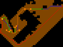
Speeding Up Learning in Real-time Search through Parallel Computing
MARQUES, Vinicius ; CHAIMOWICZ, L. ; FERREIRA, Renato
SBAC-PAD 2011 [Abstract | Slides ]
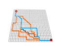
TERRA, Vinicius M.
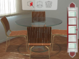
Home Layout [ C# / Unity ] - May 2022
Home Layout is a modern and complete augmented reality tool for home and garden objects. Provides an extremely intuitive, friendly and intelligent design interface, making it easy to operate by anyone. Choose, position, customize and match products from different manufacturers, mix and arrange layouts with these products in real or virtual environments.
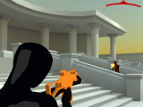
Third Person Shooter Bundle [ C# / Unity ] - Mar 2020
This bundle contains 2 essential packs to quickly setup a professional third-person shooter game: the Cover + Shooting System, a third-person shooter controller with combat player actions (cover, engage, etc.) and weapons, and the Enemy AI, a complete AI system with instantly configurable enemy NPCs, featuring a plug and play, expandable FSM.
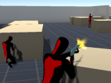
Enemy AI [ C# / Unity ] - Mar 2020
This package features an AI containing a fully configurable Finite State Machine, with predefined states, actions, decisions and transitions. The FSM is defined using Scriptable Objects, making easier the task to expand it, with new custom states, to create new NPC behaviors. The enemies can communicate with each other, look for suspicious targets, protect itself under covers, and advance in cover position, seeking for close combat, in a more aggressive engagement.
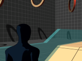
3rd Person Controller + Fly Mode [ C# / Unity ] - Jan 2015 / Oct 2017 (Mobile)
A 3rd person player controller for Unity game engine. Includes scripts for player movement, camera orbit and a Mecanim animator controller, containing basic locomotion (walk, run, sprint, strafe, and also an extra fly mode). The mobile version includes touch buttons and virtual analog sticks for Android and iOS devices.
[View in Asset Store | Mobile Version | Tutorial: How to Setup | WebGL Demo]
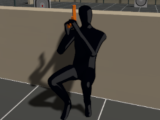
Cover + Shooting System - Third Person Shooter [ C# / Unity ] - Sep 2017
A complete starter kit for your third person shooter game. Besides the basic movements like run, sprint, jump, aim and the dynamic third person camera, this system includes 2 advanced player modes. The cover system features environment interactions, such as auto navigation and quick changes. The shooting system features fully interactive weapons, particles and hittable targets.
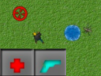
FSM Game demo [ C++ / OpenGL ] - Nov 2007
A 2D goal oriented game featuring a finite-state machine (FSM) for enemy behavior. This demo also includes simple heath and ammo implementation.
[Download]
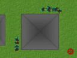
2D RTS Controller [ C++ / OpenGL ] - Oct 2007
A demo featuring 2D controller for goal oriented Real-time strategy like games. Main features:
[Download]
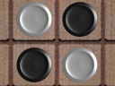
Reversi (Othello) [ C++ / OpenGL ] - Sep 2007
This is an implementation of the Reversi board game. Reversi is a strategy board game for two players, played on an 8x8 board. This demo features an opponent A.I. with Minimax, a decision rule for two-player zero-sum game theory.
[Download]
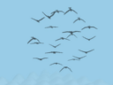
Boids - Flocking Simulation [ C++ / OpenGL / Win32 ] - Jun 2006
A demo featuring Boids, an artificial life simulation for flocking behavior of birds. Based on emergent behavior, the complexity of Boids arises from the interaction of individual agents adhering to a set of simple rules. The basic rules applied are as follows:
This demo also implements obstacle avoidance, goal seeking, and three different camera views.
[Download]